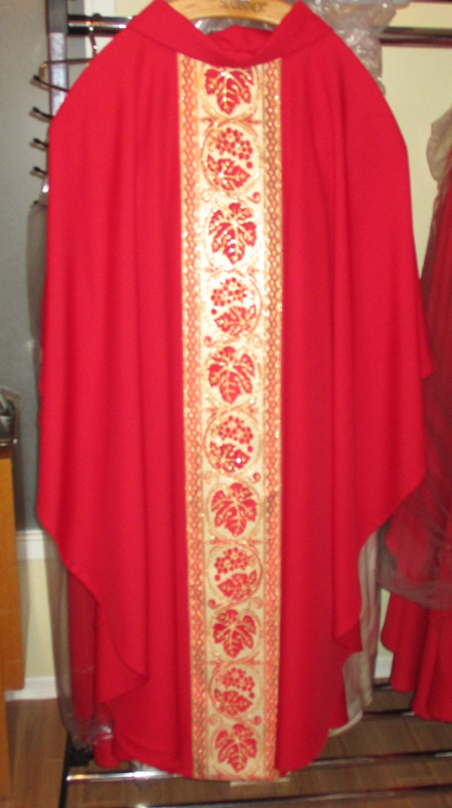

Le Centre Liturgique, dirigé par les Sœurs Disciples de Jésus Maître, est ouvert au clergé età
la population en général depuis 1953.
Il contribue à la promotion de la beauté au service de
l'éducation à la foi et de la liturgie.
Il met à votre disposition des vêtements et objets liturgiques,
icônes, statues, céramiques exclusives, pièces
d'art religieux, articles de piété, crèches,
imagerie, cierges, encens, etc.
Quelques uns de nos articles. Pour en voir plus, accéder au menu dans le haut à gauche
